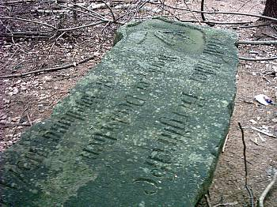

Kilka lat temu jad¹c sobie rowerem z moj¹ chrzeœnic¹ zauwa¿y³em w lesie du¿y kamieñ. Kamieñ jak kamieñ, pewnie nie wzbudzi³by mojego zainteresowania, ale by³ doœæ du¿y i w miarê kszta³tny. Dodatkowo w okolicy kamieni by³o jak na lekarstwo, wiêc zerkn¹³em sobie na niego dok³adniej. Okaza³o siê, ¿e g³az ten jest z jednej strony g³adki a na owej jedynej p³aszczyŸnie widnia³y jakieœ niemieckie napisy. Zdziwienie moje by³o tym wiêksze, ¿e pierwsze s³owa to "Adolf Hitler" - dziwne, ¿e do dziœ siê zachowa³y
Ilekroæ jadê sobie tamtêdy zawsze zerkam z zainteresowaniem, czy kamieñ dalej le¿y. Ostatnio (8 sierpnia 2004 roku) po¿yczy³em sobie od mojego taty aparat i postanowi³em ponownie sprawdziæ, jak tam siê kamieñ ma. Le¿y tak jak le¿a³, na skraju lasu, kilka metrów od asfaltu. Zrobi³em kilka zdjêæ które prezentujê poni¿ej.
 |
G³az le¿y naprawdê blisko ulicy. Mo¿e to zdjêcie nie wysz³o nazbyt relwelacyjnie, ale ten bia³y pas widoczny w drugim planie to asfalt. Nazbyt du¿a ró¿nica jasnoœci niestety by³a za trudna dla aparatu. |
| Niestety, nie mia³em przy sobie metrówki, wiêc nie mog³em zmierzyæ "obiektu". Ale widoczna na tym zdjêciu "pó³litrówka" pozwala przynajmniej oszacowaæ jego rozmiary. Kamieñ jest naprawdê spory. | |
 |
Z lewej strony widoczny jest jak gdyby he³m niemiecki z god³em. Elementami god³a s¹ ³opata i dwa k³osy zbo¿a, ale pewien nie jestem. Pod god³em widaæ fragment jak gdyby dat, wygl¹da to na 1933 - 19??, ale raczej trzeba siê domyœliæ, bo daty s¹ bardzo zniszczone. |
|  | Sam napis jest jak w ca³kiem przyzwoitym stanie: Adolf Hitler Bergstraße Werk der Deutschen ??? ! `nst-Abteilung 115/4 Friedland. W miejscu gdzie wstawi³em znaki zapytania znajdowa³o siê jeszcze jakieœ s³owo, ale ktoœ je doœæ dok³adnie zniszczy³, widaæ to w lewym dolnym rogu tego zdjêcia. Równie¿ pierwsza litera napisu jest znacznie uszkodzona. |
| Samo god³o i daty pod nim raczej nie by³y uszkodzone celowo, powodem nieczytelnoœci by³a najprawdopodobniej erozja. | |
| Byæ mo¿e god³o mia³o kiedyœ wiêcej szczegó³ów, ale dzisiaj ma³o z nich jest widocznych. |
Sam jestem ciekawy sk¹d kamieñ ten pochodzi i co oznacza widoczny na nim napis. Gdyby ktoœ mia³ na ten temat jakieœ informacje, to by³bym wdziêczny. Ciekawy jestem te¿, czy ktoœ wie, gdzie kamieñ ten le¿y. "Fredland" to dzisiejszy Mieroszów, dla u³atwienia dodam, ¿e bli¿ej z tego miejsca do Mieroszowa ni¿ do Krzeszowa :-) A dok³adnie w linii prostej jest to 8,5 km od centrum Krzeszowa.
W Mieroszowie (niem. Friedland) znajdowa³a siê filia obozu koncetracyjnego Gross Rosen
dodano 01-10-2006
Wiêcej informacjo o kamieniu mo¿na znaleŸæ w artykule Tomasza Rzeczyckiego "Szosa Che³msko - £¹czna" (Sudety nr 12/57/ grudzieñ 2005, strona 40) a tak¿e Marcina Dziedzica "Szosa Che³msko-£¹czna cd." (Sudety nr 2/59/ luty 2006, strona 38). W interpretacji Marcina Dziedzica widoczne na kamieniu god³o nale¿y do S³u¿by Pracy Rzeszy (niem. Reichsarbeitsdienst, w skrócie RAD). I trudno nie przyznaæ mu racji, gdy¿ widoczne poni¿ej god³o Reichsarbeitsdienst, z ³opat¹ i k³osami, jest niemal identyczne jak to umieszczone na kamieniu.
 |
God³o Reichsarbeitsdienst, rysunek pochodzi z niemieckiej Wikipedii (http://de.wikipedia.org/wiki/Reichsarbeitsdienst), za informacjê bardzo dziêkujê Panu Marcinowi Dziedzicowi :-) |
dodano 29-11-2015
29 listopada 2015 roku otrzyma³em e-mailem nastêpujac¹ informacjê: "(...) piszê w sprawie tego kamienia. Z tego co siê dowiedzia³em jest to pomnik poœwiêcony Adolfowi Hitlerowi. Druga jego czeœæ znajduje siê przy gospodarstwie przed czarcimi ska³ami w £¹cznej (...) Mo¿na zobaczyæ z g³ównej drogi. Jest wkomponowana w w trawiaste zbocze obok drogi wjazdowej do gospodarstwa. Mo¿e Pana to zainteresuje. Pozdrawiam (...) - bardzo dziêkujê za tê informacjê pewnemu ¿yczliwemu internaucie :-)
dodano 16-03-2017
Informacje o tym kamieniu znajdziemy równie¿ w ksi¹¿ce Tomasz Rzeczycki - "Zagadka Drogi Sudeckiej". Autor stwierdza tam, ¿e jest to pami¹tka po budowniczych drogi. W budowê mia³ byæ zaanga¿owany w³aœnie pododdzia³ 115/4 S³u¿by Pracy Rzeszy z Mieroszowa. W ten sposób zdradzam lokalizacjê kamienia, bo faktycznie znajduje siê on w³aœnie przy owej drodze, choæ ciekawy jestem, czy rzeczywiœcie by³a to docelowa lokalizacja kamienia czy te¿ umieszczony zosta³ on tam wtórnie (np. wyrzucony do lasu).

{kind=link}
{kind=link}
{kind=link}
{kind=link}